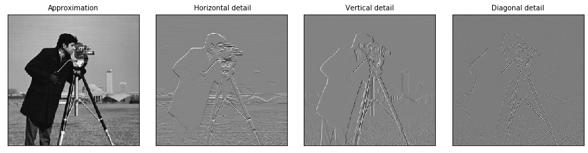

小波变换¶
%reload_ext autoreload
%autoreload 2
%matplotlib inline
import pandas as pd
import numpy as np
import pywt
import pywt.data
import matplotlib.pyplot as plt
original = pywt.data.camera()
# Wavelet transform of image, and plot approximation and details
titles = ['Approximation', ' Horizontal detail',
'Vertical detail', 'Diagonal detail']
coeffs2 = pywt.dwt2(original, 'bior1.3')
LL, (LH, HL, HH) = coeffs2
fig = plt.figure(figsize=(12, 3))
for i, a in enumerate([LL, LH, HL, HH]):
ax = fig.add_subplot(1, 4, i + 1)
ax.imshow(a, interpolation="nearest", cmap=plt.cm.gray)
ax.set_title(titles[i], fontsize=10)
ax.set_xticks([])
ax.set_yticks([])
fig.tight_layout()
plt.show()

pywt.families()
['haar',
'db',
'sym',
'coif',
'bior',
'rbio',
'dmey',
'gaus',
'mexh',
'morl',
'cgau',
'shan',
'fbsp',
'cmor']
pywt.families(short=False)
['Haar',
'Daubechies',
'Symlets',
'Coiflets',
'Biorthogonal',
'Reverse biorthogonal',
'Discrete Meyer (FIR Approximation)',
'Gaussian',
'Mexican hat wavelet',
'Morlet wavelet',
'Complex Gaussian wavelets',
'Shannon wavelets',
'Frequency B-Spline wavelets',
'Complex Morlet wavelets']
pywt.wavelist(family='coif',kind='discrete')
['coif1',
'coif2',
'coif3',
'coif4',
'coif5',
'coif6',
'coif7',
'coif8',
'coif9',
'coif10',
'coif11',
'coif12',
'coif13',
'coif14',
'coif15',
'coif16',
'coif17']
pywt.wavelist(family='haar',kind='continuous')
['haar']
wavelet = pywt.Wavelet('db1')
print(wavelet)
Wavelet db1
Family name: Daubechies
Short name: db
Filters length: 2
Orthogonal: True
Biorthogonal: True
Symmetry: asymmetric
DWT: True
CWT: False